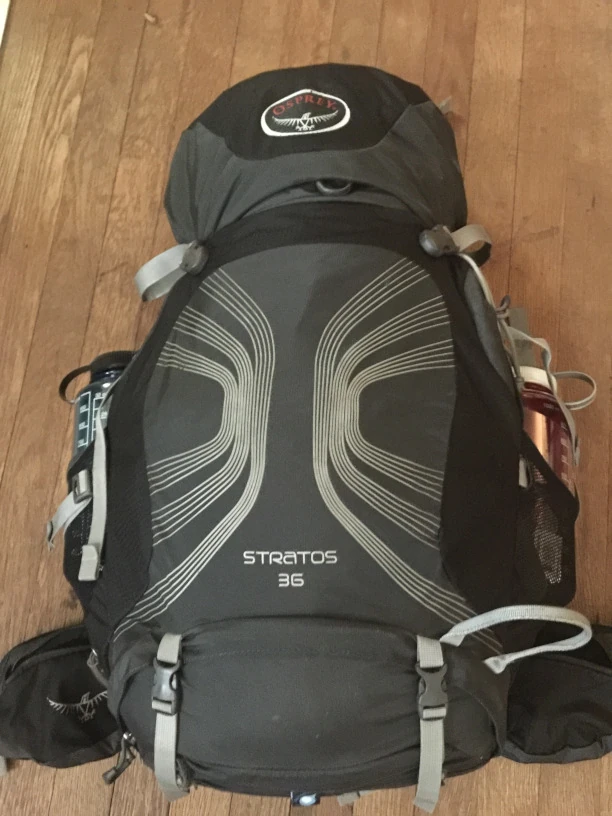

Preparing for the Camino de Santiago is key to having a successful and enjoyable journey. It's a good idea to focus on getting in shape before you set out, as the physical demands can catch many people off guard. Unfortunately, some pilgrims have to cut their trip short due to health issues, and there are even rare cases where people pass away along the route.
That said, there's an important Camino saying: “Don't walk a Camino before you walk your Camino.” This reminds you to find a balance—train and prepare, but don't overdo it. The Camino is as much about the journey itself as it is about the destination, and part of the experience is adjusting to the rhythm of walking every day.
Gear

When it comes to packing for the Camino, less is more. Almost anything you need can be purchased in Spain, so avoid overpacking by bringing only what's essential. Remember, everything you bring will be carried on your back—unless you opt to pay for pack transportation services, which some pilgrims find convenient. However, be aware that this service can occasionally be unreliable, and there are stories of people losing their entire pack along the way. Here are the essentials to bring:
- Sleeping Bag or Liner: Depending on the season, you'll need either a lightweight sleeping bag or, in summer, a bag liner for the albergues.
- Backpack: A well-fitting backpack is crucial. Choose one with adjustable straps and good support to avoid unnecessary strain.
- Shoes: Your shoes are the single most important item. Make sure they're comfortable, well-fitting, and broken in. Many pilgrims prefer hiking shoes or trail runners, but choose what works best for your feet.
- Clothing: Bring a couple of pairs of quick-drying hiking clothes. Most albergues have facilities for hand-washing, and you'll hang your clothes to dry overnight.
- Phone and Power Bank: Your phone is essential for navigation, communication, and photos. A backup power bank is a good idea, especially if you're walking longer stretches without access to outlets.
- Plug Adapter: Spain uses Type C or Type F plugs, so bring a converter if you're coming from a country with different outlets. These are also easy to purchase in most Spanish towns.
- Money: Small Spanish towns often don't accept cards, so it's wise to carry Euros. ATMs are common, but having some cash on hand can save you in a pinch.
- Pocket Knife: A pocket knife can be handy for preparing simple meals or cutting items along the way, but since you can't fly with one, plan to purchase it in Spain (or France, if you're starting there).
- Medication: Bring any necessary medications and plan ahead, as some prescriptions may not be readily available in Spain.
- First Aid Kit: A small kit with essentials like blister pads, pain relievers, and antiseptic cream can save you a lot of discomfort.
- Toiletries: Keep these minimal—travel-size items are ideal. Many pilgrims recommend solid soap that can be used for both body and clothes.
- Water Bottle or Hydration System: Staying hydrated is crucial, but don't worry about carrying too much water. There are potable water fountains all along the Camino, and as long as they're not labeled agua no potable (non-potable water), they're safe to drink from. Simply refill your bottle as needed.
- Pilgrim Passport (Credencial del Peregrino): If you don't already have one, you'll get this at your starting point, but it's worth mentioning here as it's essential to track your journey.
- Trekking Poles: These can be a lifesaver on steep climbs and descents, though they're not for everyone.
- Sunglasses and Hat: These are essential in summer to protect against the sun.
- Small Journal: Many pilgrims enjoy keeping a journal to document their thoughts and experiences.
Remember, almost everything you need can be replaced along the Camino if something breaks or is forgotten. Traveling light is key to enjoying the journey, so pack thoughtfully and keep it simple.